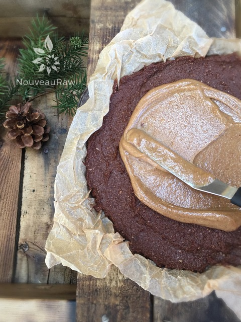
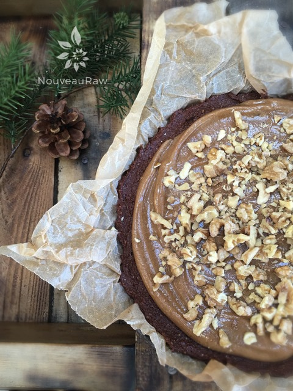
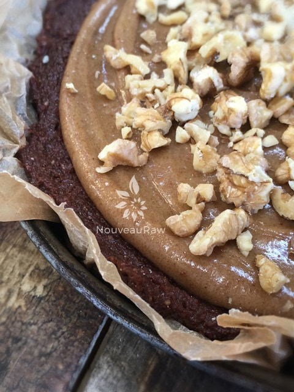
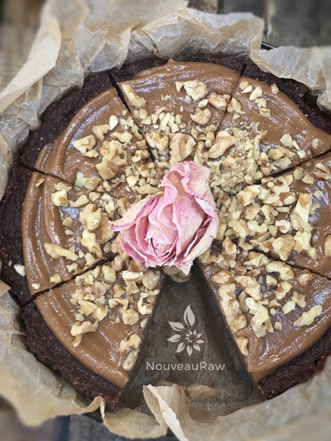

Chocolate Banana Fudge Cake with Caramel Frosting
~ raw, vegan, gluten-free ~
My husband needed some sweet loving… so that’s exactly what I dished up! With each passing day, I find myself amazed how fast the days are flying by. We have so many new adventures taking place in our life that I rarely remember going to bed or even waking up… am I coming or going?
Did I put that plate down or was I just picking it up? Ever have one of those days? Regardless of how hectic things are, it is important that we stop to remember those special people in our lives, the one’s who make us smile and warm our hearts.
My husband… the man of my dreams. He stands beside me through everything, gives me strength, and gives me encouragement.
Sometimes I have to just slow down a tad and tell him how much I love and appreciate him! If you have a special “somebody” in your life… stop what you are doing (that means reading this post) and go tell them, call them, whatever it is you need to do to get them within earshot.
Life is too short to let these moments slip by. Then come back and make this recipe and serve them some sweet loving!
One of the many beautiful features of this fudgy cake is that it freezes beautifully. Due to the dates, it won’t freeze solid, so there isn’t need to worry about thawing it out before serving it. It can be made days or even weeks in advance and stored in the freezer. When ready to serve, just remove, slice, and serve. I hope you enjoy this simple recipe. Many blessings, amie sue
Base: yields 8×8 pan
- 3 cups raw walnuts, soaked & dehydrated
- 2/3 cup raw cacao powder
- 1/4 tsp Himalayan pink salt
- 16 Medjool dates, pitted
- 3 ripe bananas
- 1 tsp maple extract
- 2 tsp water
- 1 cup chopped walnuts (for topping)
Caramel:
- 1/2 cup raw almond butter
- 1/2 cup maple syrup or raw dark agave syrup
- 1/2 cup date paste
- 2 tsp vanilla extract
- 1/8 tsp Himalayan pink salt
Preparation:
- Place the walnuts, cacao, and salt in a food processor fitted with the S-blade, process until finely ground.
- Add the dates, bananas, maple extract, water, and process until the mixture begins to stick together.
- Line a 8 x 8 cake pan with a parchment paper or lightly grease with coconut oil
- Pour the chocolate mixture into the pan and distribute it evenly. Press down with your hand to compact.
Caramel sauce:
- In a high-powered blender combine the almond butter, sweetener, date paste, vanilla, and salt. Blend until smooth.
- Stop occasionally to scrape the sides down.
- Spread the caramel frosting on top and sprinkle chopped walnuts on the cake.
- Store any excess in the fridge in a glass container for approximately 2 weeks. To soften, leave out at room temperature for a few hours.
- Place the cake in the freezer to firm up. This cake won’t freeze solid. When ready to serve, remove from freezer, slice and enjoy!




© AmieSue.com